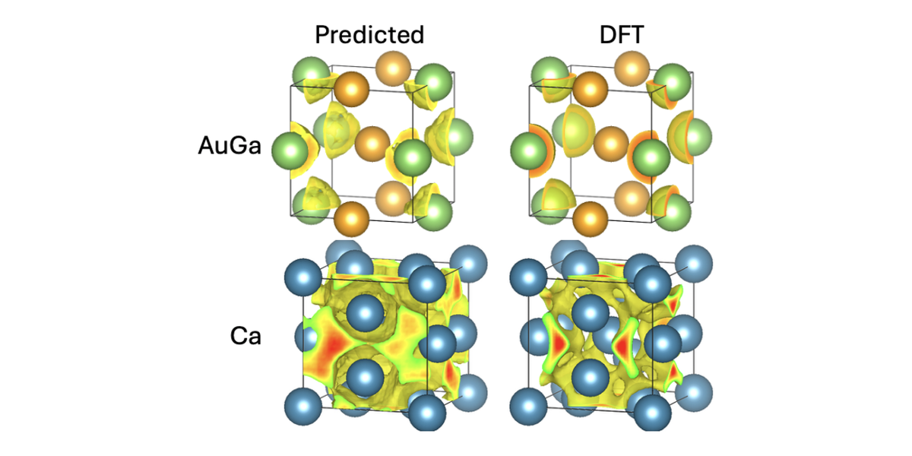

Real-space electronic structure
ELFNet and electronic-structure prediction
Real-space electronic-structure prediction from superposed atomic densities.
- Scientific question
- Can electron localization be screened before full electronic-structure post-processing?
- Approach
- Periodic 3D CNNs map superposed atomic density grids to DFT electron localization functions.
- Main idea
- Fast ELF prediction can expose bonding and interstitial localization early in screening.